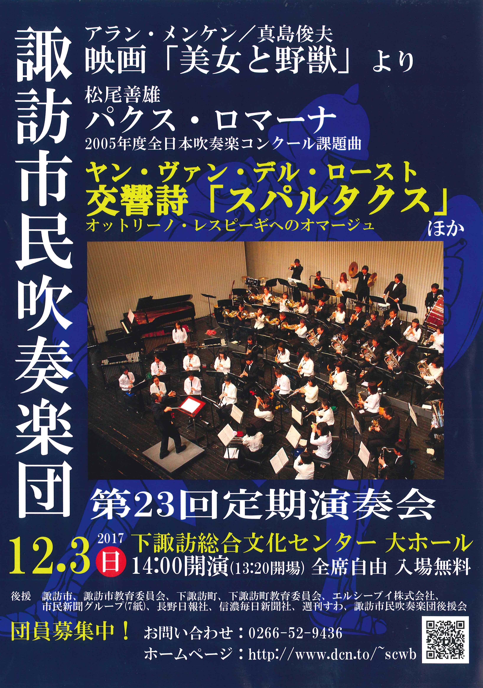

コンサート報告（2017年）
2025年 ｜
2024年 ｜
2023年 ｜
2022年
2021年 ｜
2020年 ｜
2019年 ｜
2018年 ｜
2017年
2016年 ｜
2015年 ｜
2014年 ｜
2013年 ｜
2012年
2011年 ｜
2010年 ｜
2009年 ｜
2008年 ｜
2007年
2006年 ｜
2005年 ｜
2004年 ｜
2003年 ｜
2002年
アイスキャンドル点灯式出演 演奏終了（2017.2.4）
諏訪地方各地で手作りのアイスキャンドルに火を灯すイベントの上諏訪地区点灯式に、当団トランペットパートが出演し、ファンファーレなどの演奏をしました。今年で７年連続になり、当団としてもすっかり冬の行事として定着しつつあります。上諏訪駅前も少しずつ変化の兆しがあり、イベントを通じて盛り上げていければと思っております。
蓼科高原ロビーコンサート 演奏終了（2017.4.22）
今年で３年連続となる、蓼科グランドホテル「滝の湯」さんでのロビーコンサートを開催しました。諏訪ではちょうど桜が満開となったこの時期、お子様からお年寄りまで、多くの宿泊客の皆さんにご来場いただきました。夕食後のリラックスした時間を楽しくお過ごしいただけたなら大変うれしく思います。ありがとうございました。
並木DEコンサート 演奏終了（2017.5.27）
今年も2017年度１回目の並木DEコンサートに呼んでいただきました。やや気温は低かったものの天気に恵まれ、たくさんのお客様の前で演奏できたこと、大変うれしく思います。このコンサートが終わると、諏訪市吹も12月の定期演奏会に向けていよいよ盛り上がって行きます。今後とも、どうぞよろしくお願いいたします。
柿蔭山房 七夕コンサート 演奏終了（2017.7.1）
歌人・島木赤彦の住まいであった柿蔭山房（しいんさんぼう）でのコンサート。本年はウィンズ・ファミリアすわの皆さんと当団が出演しました。当団からはフルート、クラリネット、トランペット、バリチューバのアンサンブルで出演。心配された雨も上がり、屋外で多くのお客様に聞いていただくことができました。
アイリス茅野 夏祭り出演 演奏終了（2017.7.29）
茅野市の特別養護老人ホーム・アイリス茅野の夏祭りに初めて出演しました。施設の皆さんに歓迎していただき、大変うれしかったです。屋外での演奏でしたが、入居者や関係者の皆さんに熱心に聞いていただき、誠にありがとうございました。
聖母寮 慰問演奏 演奏終了（2017.7.29）
数えてみたら、夏の聖母寮訪問は今年で12年連続でした。すっかり夏の行事として定着した感があります。アンコールでの「ふるさと」合唱も含め、一体感のある演奏ができました。ありがとうございました。
第23回 上社の杜音楽祭 演奏終了（2017.10.1）
晴れ渡る秋空の下、諏訪大社上社前の広場にて今年も音楽祭を開催することができました。午前9:30からお昼まで、私たち諏訪市吹と諏訪市内４中学校吹奏楽部の演奏をお届けしましたが、多くのお客様にご来場いただき、本当にありがたく厚く御礼申し上げます。
最後は恒例の、160人編成の合同演奏。年齢層はバラバラですが、ひとつの音楽に取り組んだ我々のサウンドが皆さんに何か伝わっていれば幸いです。ありがとうございました。
第23回 定期演奏会 演奏終了（2017.12.3）
 当団最大の行事、定期演奏会。今年は4年ぶりに下諏訪総合文化センターで開催しました。背伸びして選んだ楽曲たちにかなり苦戦し、一時は「途中で止まるんじゃないか？！」という雰囲気まで漂いましたが、社会人ならではの？追い込みで何とか無事演奏会を終了することができました。
演奏会開催にあたって、多くの皆様にご協力をいただきました。ここに厚く御礼申し上げます。そして、寒い中ご来場いただいた530名のお客様、誠にありがとうございました。今後とも諏訪市吹を、どうぞよろしくお願いいたします。